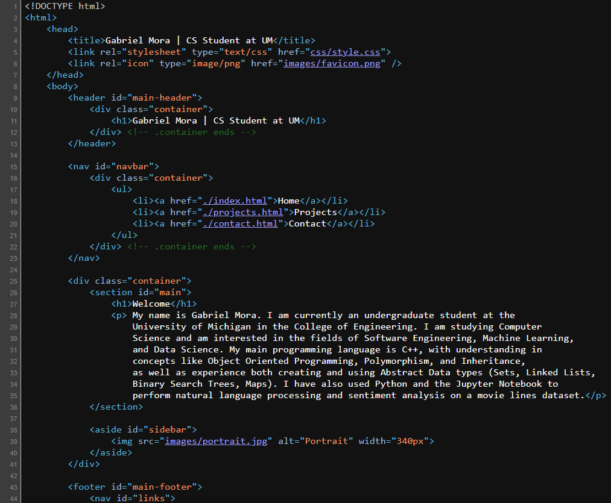

This project was our end of semester project for my Solar Energy and Wireless Systems course. We used Light Dependant Resistors with one set tracking vertical light differences, and the other set tracking horizontal light differences. These LDRs sent analog data to the arduino microcontroller, which used the analog data from the LDRs to direct two servos setup in a gimbal to rotate the device appropriately. You can read more about the project in this Final Report.
This website was developed with HTML, CSS, and JavaScript. The purpose of this project was to learn beginner level website design. I utilized HTML to organize webpage content and connect different pages into a cohesive website. I also used CSS to design and format the presentation of the website content. Finally, I used JavaScript to handle user contact so that users of the website could be able to send messages to me.
